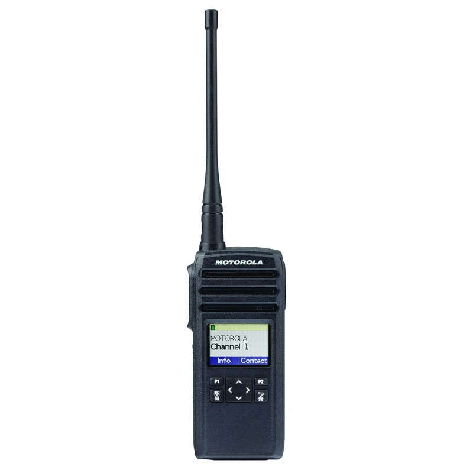

Autonomia
Bateria de íon-lítio que aguenta o turno. Um dia de trabalho sem recarregar.
16,5hbateria Li-Ion 1200 mAh (ciclo 5/5/90 na potência máxima)
Rádio digital profissional que opera na faixa 900 MHz com salto de frequência (FHSS): comunicação clara, com menos interferência e privacidade. Você aperta o botão e fala na hora, sem operadora e sem depender de sinal de celular.
Sem necessidade de licença de frequência individual. Na ABC o rádio vem com programação, suporte técnico, garantia de fábrica e atendimento que vai ao seu local quando o projeto exige.
Faixa ISM 900 MHz de uso livre. Adoção sem burocracia.
Configuramos os canais do jeito da sua operação.
Vamos até você medir o alcance antes de fechar.
Garantia de fábrica e assistência especializada.
Indicado para quem precisa de resposta imediata dentro da operação (portaria, equipe em galpão ou obra, ronda) em segmentos como segurança, eventos, indústria e logística.
O DTR720 opera na faixa ISM 900 MHz com tecnologia FHSS. Com base na regulamentação de equipamentos de radiação restrita, estações que usam equipamentos nessa faixa estão dispensadas de licenciamento individual de frequência. Isso reduz a burocracia de adoção, especialmente útil para eventos e locação por período. Fale com a gente para entender o que se aplica à sua operação.
Bateria de íon-lítio que aguenta o turno. Um dia de trabalho sem recarregar.
Proteção IP54 contra poeira e respingos, certificação militar MIL-STD 810G e revestimento antimicrobiano no corpo do rádio.
O salto de frequência (Frequency Hopping Spread Spectrum) distribui a comunicação pela faixa 900 MHz. O resultado é um áudio digital mais limpo e resistente a interferência.
São 10.000 códigos disponíveis para privacidade. A conversa fica entre a sua equipe, sem depender de operadora ou rede externa.
Você organiza a frota por uso, não por jargão técnico: falar com uma pessoa específica, com todos no canal, ou só com um grupo fechado. Display gráfico colorido com retroiluminação ajuda a operar sem erro.

Dados extraídos do datasheet Motorola Solutions do DTR720. A faixa de frequência exata varia por país. Confirmamos a versão correta na cotação.
A faixa exata para o Brasil é confirmada na cotação.
Perfil de uso 5/5/90 (5% TX / 5% RX / 90% standby) na potência máxima.
Os números de cobertura são medidos pelo fabricante em ambiente interno controlado. Parede grossa, estrutura metálica e relevo reduzem o alcance real. Por isso preferimos medir no seu local antes de fechar.
A certificação MIL-STD 810 valida o equipamento para uso pesado em campo.
Escolhido por equipes que precisam de resposta imediata, sem depender de sinal de celular ou plano de operadora.
A portaria fala com a ronda na hora, sem operadora no meio. A privacidade digital mantém a comunicação dentro da equipe, e o áudio FHSS resiste à interferência em ambiente com muita conversa de rádio.
Coordenar uma equipe inteira por celular é inviável. Com rádio, um aviso chega para todos ao mesmo tempo. E a faixa 900 MHz de uso livre simplifica a locação por período, sem burocracia de licenciamento individual.
Ambientes com ruído, poeira e estrutura metálica são difíceis para o celular. O DTR720, com IP54 e MIL-STD 810G, aguenta o uso diário, e a cobertura interna em vários andares ajuda em prédio onde o celular falha.
Comunicação simples entre portaria, zeladoria e manutenção, sem mensalidade de operadora. O revestimento antimicrobiano e a resistência ao uso diário ajudam em ambientes compartilhados.
Depende da operação. Se você precisa de resposta imediata, o rádio e o celular não jogam o mesmo jogo.
Ambiente sério (segurança, evento, logística, indústria) precisa de comunicação que não falha. É aí que o rádio entra.
Os dois são da mesma plataforma digital 900 MHz e conversam na mesma frota. A diferença principal está no display. Veja o que muda e fale com a gente para escolher pelo seu uso.
| Característica | Motorola DTR720 | Motorola DTR620 |
|---|---|---|
| Display | Gráfico colorido, retroiluminado | Sem display |
| Tecnologia | Digital FHSS 900 MHz | Digital FHSS 900 MHz |
| Canais | 50 | 50 |
| Licença de frequência individual | Não exige | Não exige |
| Compatível entre si | Sim, mesma frota | Sim, mesma frota |
| Indicado para | Quem quer ver contatos/menu na tela | Quem prefere o mais simples "ligar e usar" |
Tem dúvida de qual escolher? Na cotação a gente recomenda pelo seu uso, sem empurrar o mais caro à toa.
Fone, bateria extra, carregador, capinha e mais. Marque os itens, informe a quantidade de rádios e leve tudo num único pedido para o formulário de cotação no fim da página.
Respostas honestas, do jeito que a gente explica no atendimento.
Chama no WhatsApp. Se for o caso, a gente agenda um teste no seu local.
Em marketplace você não sabe de quem comprou, e a pessoa pode sumir amanhã. Aqui você tem um parceiro técnico do começo ao fim, no ABC Paulista, com proximidade para atender o Grande São Paulo.
Evento, obra, demanda sazonal ou frota fixa: você usa o rádio sem imobilizar capital. E como a faixa 900 MHz é de uso livre, a adoção é mais simples, sem burocracia de licença de frequência.
Cotar locaçãoManutenção e reparo de rádios Motorola: troca de antena, botões e componentes. Conhecimento real da plataforma, não bancada genérica.
A gente programa os canais, grupos e funções do jeito que a sua equipe trabalha. Você recebe o rádio pronto para usar. Dependendo da negociação, a programação já entra inclusa.
Antes de fechar, vamos até você medir o alcance no ambiente real: galpão, evento, subsolo ou andar alto.
Garantia do fabricante, mais a nossa estrutura para troca de peças (antena, botões, acessórios) quando precisar. Você não fica na mão.
Você fala com quem conhece rádio, pelo WhatsApp ou e-mail, e tira a dúvida na hora. Se for só preço, a gente é sincero: o nosso valor está no serviço.
Conta pra gente o que você precisa. Respondemos com a melhor opção (venda ou locação) e, se fizer sentido, agendamos um teste no seu local. Revenda autorizada Motorola Solutions, no ABC Paulista.